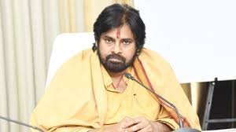

ANDHRA PRADESH KA CYCLONE
Pawan kalyan Biography :
- Pawan Kalyan's actual name is Konidela Kalyan Babu. He began to call himself as Pawan Kalyan when he worked on his first film, Akkada Abbai Ikkada Ammayi, in 1996. He has worked in several critically and commercially successful films and has established himself as one of the leading actors in Telugu cinema. He is also an accomplished choreographer. Pawan Kalyan was born in Chirala, to Sri Venkat Rao and Smt Anjana Devi. He is the youngest brother of actor Chiranjeevi and actor-producer, actor Nagendra Babu. Pawan Kalyan married Renu Desai, an actress who co-starred with him in the movies Badri and Johnny
Pawan Kalyan Political Carrier :
-
Pawan Kalyan launched Jana Sena or Jana Sena Party which is an Indian political party in the states of Andhra Pradesh and Telangana, in March 2014. Jana Sena which means People's Army in Telugu language. On March 10, 2014 he submitted an application for registering the party name. Pawan Kalyan formally launched the party at HICC (Hyderabad International Convention Centre) Madhapur on 14 March 2014. The party has been approved by the election commission on 11 December 2014.